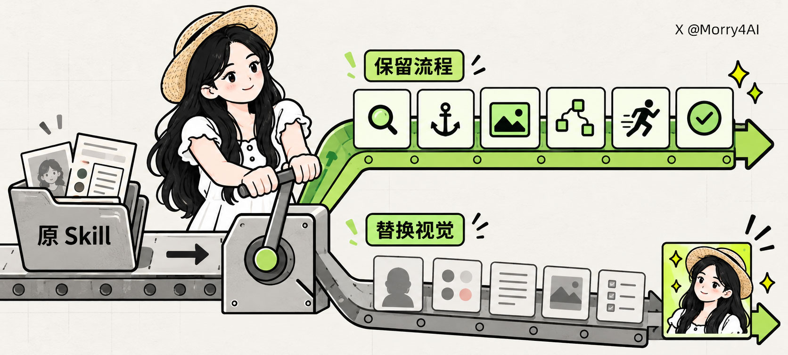
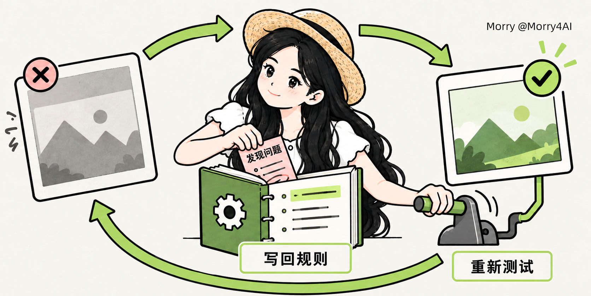

把小黑配图 Skill，改成自己的视觉系统
沿用读文章、选重点、规划与检查的流程，把角色、风格、提示词和验收规则换成自己的；先测一张，满意后再安装。
- 保留流程：先理解文章，每张图只解释一个核心意思，先规划再生成。
- 替换规则：角色、颜色、线条、示例和检查标准一起改，不能只换名字。
- 角色参与表达：人物要执行关键动作，不能只是角落里的装饰。
- 把反馈留下：每次纠错都写回 Skill，并重测同一段内容。
先判断是否适合你
适合已有固定角色、配色或版式，想把重复配图工作整理成规则的创作者。没有视觉体系时，先补角色参考和风格描述，不急着复制一套空壳。
现在就能做的第一步
把原仓库链接交给 Codex，只要求阅读和解释，不安装、不修改。后续生成图片仍需可用的生图能力；提示词本身不提供服务额度。
先改工作区版本，再决定是否安装
先确认哪些流程值得保留，再复制新版本、补视觉规则、统一修改、单图测试。若角色或风格不对，把问题写回规则并重测。不要为了快速得到一张好图，丢掉下一次还能复用的规范。
本文依据 Morry 的原文整理，不是本次独立复现报告；图中效果来自原作者示例。与小黑项目介绍卡不同，这里只讲如何改造成个人视觉系统。


快速阅读可到这里。下面七步给出可复制提示、应看到的产物和常见错误。准备角色参考图、视觉规则、一段真实内容，以及可调用的生图能力后再继续；先替换提示中的花括号占位内容。
先读懂流程，不安装
目的：分清通用配图逻辑和小黑专属设定。先让 Codex 只读审查仓库，避免在没理解规则前改变环境。
请帮我检查这个配图 Skill：
https://github.com/helloianneo/ian-xiaohei-illustrations
我想把它改成自己的视觉配图 Skill。
现在先不要安装，也不要修改。
请告诉我：
1. 这个 Skill 是怎么生成配图的；
2. 哪些工作流程值得保留；
3. 哪些内容属于小黑自己的角色和视觉风格，需要替换。
请用小白也能看懂的方式说明。验收信号：一份流程说明，以及“保留项 / 替换项”清单。
常见错误：把检查误当成安装授权；直接运行仓库中的未知脚本。
复制并改名，保留原版
目的：在当前工作区建立独立版本，保留回退与对照的依据。新名用小写英文和连字符，例如 yourname-illustrations。
请把这个 Skill 复制成一个新的个人配图 Skill。
新 Skill 名称叫：{你的英文名称}-illustrations
要求：
1. 保留原 Skill，不要覆盖原文件；
2. 新版本放在当前工作区；
3. 现在先不要安装；
4. 删除原 Skill 中与小黑角色和小黑视觉风格有关的内容；
5. 保留文章分析、配图规划、生成图片和检查结果的工作流程。
完成后告诉我新 Skill 保存在哪里。验收信号：新版本的准确保存路径；原版仍在，新版尚未安装。
常见错误：沿用原名，或直接改原版，导致以后无法判断调用的是谁。
给角色身份，也给动作规则
目的：上传自己的角色参考图，写明配色、背景、线条、版式、文字量和不接受的风格。参考图用于确认身份，不用来锁死原来的姿势与背景。
这是我的角色参考图和个人视觉规则。
请把它们加入刚刚创建的新 Skill。
修改时注意：
1. 参考图只用来确认角色身份，不要复制参考图的原姿势和背景；
2. 把原来的小黑角色完整替换成我的角色；
3. 把原来的视觉风格替换成我的视觉规则；
4. 保留原 Skill 的内容分析和配图工作流程；
5. 不确定的地方先列出来告诉我，不要自己随意决定。
我的视觉规则如下：
{在这里粘贴你的视觉规则}
我的角色是每张图片的必选项。
角色不能只是站在旁边、放在角落或充当装饰。
她必须亲自推动、筛选、连接、拆解、测试或完成画面中的核心动作。
如果把角色移除后，画面表达仍然完全成立，就说明构图不合格，需要重新设计。验收信号：角色规范与视觉规则；不确定项单独列出，等你确认。
常见错误：只写“每张图都有人物”，结果人物成了角落里的头像。
一个比“必须出现”更具体的检查
把角色从构图中移除后，画面的意思是否仍完全成立？若成立，就需要重做构图。可以让角色推动、筛选、连接、拆解或测试关键对象。这个判断针对表达，不只是出镜率。

统一修改所有相关文件
目的：把角色规范、视觉规范、生图提示和检查标准一起换掉；继续保留文章分析、配图规划、生成与测试流程。
现在请正式修改这个新 Skill。
请完成下面几件事：
1. 修改 Skill 的名称和介绍；
2. 建立我的角色规范；
3. 建立我的视觉风格规范；
4. 修改每张图片使用的生图提示词；
5. 修改图片生成后的检查标准；
6. 删除所有残留的小黑角色和原视觉风格描述；
7. 保留原来的内容分析、配图规划和测试流程；
8. 完成后检查这个 Skill 是否能正常使用。
不要只替换角色名称，要检查所有相关文件。验收信号：修改文件清单、旧角色残留检查和可用性检查结果。
常见错误：只替换角色名字，旧示例、旧提示和旧验收规则仍互相打架。
用真实内容，只测一张
目的：选一段你平时真的会发布的内容，先规划，再生成一张图。先找规则缺口，不急着批量出图。
现在使用刚刚修改好的新 Skill 进行第一次测试。
先根据下面内容规划一张配图，再直接生成图片：
{粘贴你的内容}验收信号：一张测试图及其配图方案；逐项检查下方五个信号。
常见错误：第一次就生成五六张；只看“漂亮不漂亮”，没有检查表达。
单张测试，检查这五项
- 身份：像不像你的固定角色，辨识特征是否保留？
- 动作：角色是否真的参与了核心动作？
- 表达：能否快速看懂这张图要解释什么？
- 账号风格：颜色和版式是否与你的日常内容一致？
- 杂项：有没有多余标题、错字或奇怪装饰？
以上是原文的人工检查项，不是已测得的通过率，也不保证换模型后效果不变。
反馈写回规则，再测同一段
目的：把眼前的问题改成下一次也会生效的 Skill 规则，并用刚才的内容重测。下面是原文的角色动作问题示例，实际反馈应对应自己的图片。
整体风格没有问题，但人物只是站在旁边，没有参与核心动作。
请完成两件事：
1. 修改 Skill，让角色必须亲自完成画面中的关键动作；
2. 使用修改后的 Skill，把刚才的内容重新生成一张测试图。验收信号：可定位的规则改动，以及使用新版规则生成的重测图。
常见错误：只修当前图片，不改 Skill；换了文章后无法比较同一问题是否改善。


满意后安装，不覆盖同名
目的：确认测试图符合要求后再安装。保留工作区版本，先检查同名冲突，再确认 Codex 能识别并给出调用方式。
这个版本的效果已经符合要求。
请把最终版本安装到我当前使用的 Codex Skills 目录。
要求：
1. 保留工作区里的修改版本；
2. 不要覆盖其他同名 Skill；
3. 安装后检查 Codex 是否能识别；
4. 告诉我以后应该如何调用它。验收信号：安装位置、识别结果和实际调用名称；发现同名冲突先停下。
常见错误：把一次满意当成长期稳定保证；安装时覆盖已有同名 Skill。
安装后，生成与规划分开调用
Use $你的-skill-名称
为下面这篇内容规划并生成 3 张配图。
{粘贴文章}Use $你的-skill-名称
先不要生成图片。
请阅读下面文章，告诉我哪些位置值得配图，并输出配图方案。
{粘贴文章}将“你的-skill-名称”替换为安装后实际识别的名称。目录位置与识别方式以你的 Codex 环境为准；本文不提供未经核验的固定安装路径。
先确认能力、费用和素材权限
“对话改造”仍需要输入
原作者描述自己通过与 Codex 对话完成修改。你仍要提供角色参考与视觉规则，检查实际文件和测试结果；不能据此保证任何环境都能零配置运行。
生成能力与费用
代码助手能改规则，不等于当前环境已经有可用生图接口。先确认模型、凭据、网络和计费；原文未给出可通用的单张价格，重测也可能产生费用。
隐私与角色权利
上传角色图和文章前，检查所用服务的数据政策及素材权利。敏感稿件先脱敏；不要把密钥、客户资料或未获许可的人物素材写进可共享的 Skill。
一次满意不是效果保证
本卡未安装、改造或运行该 Skill，也未独立验证稳定性。建议先保留测试内容、规则版本与问题记录，再用其他真实段落检查是否仍适合你的用途。
下一步：先做第 1 步，只拿到“保留 / 替换”清单。确认无误后再复制新版本，把每次测试暴露的问题留在规则里。
原文、上游与本卡的范围
- Morry 原帖与文章入口 · 原文《保姆级教程：0代码，我把爆火的小黑 Skill 改成自己风格的配图系统》，发布于 2026-09-11。本文七步及提示词据此整理。
- 原文文章 · 作者 Morry（@Morry4AI）；本卡引用三幅原文插图，非本次生成。
- 上游 ian-xiaohei-illustrations · 当前留档快照为
4102eb807f03bcb6e538a16e8b31b41db8b5b954，不能视为与九月原文完全同版。 - 上游软件采用 MIT 许可；原文插图授权范围未知，本卡仅作教程必要引用并署名链接，不将插图称为 MIT 素材。
七步提示词保留原文写法；每步的产物与常见错误是依据原文整理的阅读辅助。费用、隐私和后续多段内容测试属于编辑补充的使用提醒，不是原作者的测评结论。